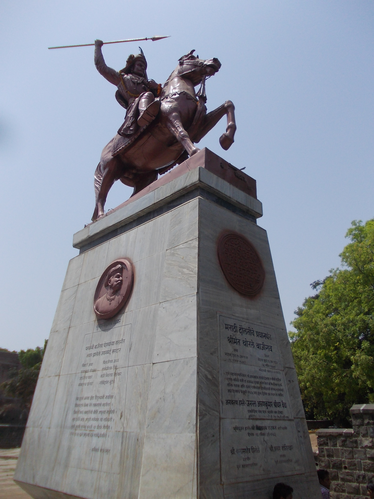

४१ लढाया, शून्य पराभव — अफाट वेगवान घोडदौड, जागतिक दर्जाची रणनीती आणि अटकेपार मराठा साम्राज्यविस्ताराची पायाभरणी करणारे अद्वितीय युगपुरुष.

ऐतिहासिक शनिवार वाड्याच्या भव्य दिल्ली दरवाजासमोर स्थापित बाजीरावांचा हा भव्य कांस्य पुतळा त्यांच्या वादळी घोडदौड आणि अपराजित सेनापतीपदाची नित्य साक्ष देतो.


बाजीराव यांचा जन्म १८ ऑगस्ट १७०० रोजी कोकणातील श्रीवर्धन येथील चित्पावन भट घराण्यात झाला. त्यांचे वडील पेशवे बाळाजी विश्वनाथ हे छत्रपती शाहू महाराजांच्या दरबारात अत्यंत मुत्सद्दी आणि दूरदर्शी मुख्य प्रधान (पेशवे) होते, तर आई राधाबाई अत्यंत खंबीर आणि धर्मपरायण होत्या. लहानपणापासूनच बाजीरावांना आपल्या वडिलांसोबत युद्धमोहिमा, दरबारी मुत्सद्देगिरी आणि मराठ्यांच्या अंतर्गत संघर्षाचे प्रत्यक्ष अनुभव मिळाले. वयाच्या अवघ्या तेराव्या वर्षी ते वडिलांसोबत मोहिमेवर गेले होते.
२ एप्रिल १७२० रोजी बाळाजी विश्वनाथ यांच्या निधनानंतर छत्रपती शाहू महाराजांसमोर पेशवेपदासाठी अनेक ज्येष्ठ दरबारी आणि अनुभवी सरदारांचे पर्याय उपलब्ध होते. परंतु शाहू महाराजांनी तरुण रक्ताची धग, अचाट धाडस आणि कल्पकता ओळखून अवघ्या २० वर्षांच्या बाजीरावांच्या खांद्यावर पेशवेपदाची वस्त्रे सोपवली. दरबारातील ज्येष्ठ मुत्सद्द्यांच्या भुवया उंचावल्या तेव्हा शाहू महाराजांनी ठामपणे सांगितले होते: "हा मुलगा माझ्या पाठीवरचा घोडा आहे, तो मराठा सत्तेला हिंदुस्थानभर नेईल!"
पेशवेपद स्वीकारल्यानंतर बाजीरावांनी छत्रपती शाहू महाराजांच्या दरबारात मराठा सत्तेच्या विस्ताराची एक नवी दिशा मांडली. तोपर्यंत मराठे केवळ दक्षिणेतील स्थानिक राजकारणात आणि मुघलांकडून चौथाई-सरदेशमुखी वसूल करण्यात गुंतले होते. बाजीरावांनी अत्यंत प्रभावी शब्दांत दरबारात घोषणा केली:
छत्रपती शाहू महाराजांनी अत्यंत आनंदाने उद्गार काढले: "तुम्ही खरोखरच योग्य पित्याचे सुपुत्र आहात! आपण निश्चितपणे मराठ्यांचा ध्वज हिमालयापर्यंत नेऊन ठेवाल!" आणि अशा रीतीने मराठ्यांच्या उत्तर मोहिमांची ऐतिहासिक सुरुवात झाली.
बाजीराव पेशव्यांनी आपल्या २० वर्षांच्या कारकिर्दीत लढलेल्या सर्वच्या सर्व प्रमुख लढायांमध्ये विजय संपादन केला (४१ लढाया, ० पराभव):
| वर्ष / तारीख | लढाईचे नाव | प्रतिस्पर्धी सेनापती / सत्ता | भौगोलिक परिसर | रणनीतिक डावपेच (Tactics) | ऐतिहासिक परिणाम व तह |
|---|---|---|---|---|---|
| २८ फेब्रु. १७२८ | पालखेडची लढाई | निजाम-उल-मुल्क (हैदराबाद) | नाशिक-गोदावरी खोरे | अत्यंत वेगवान घोडदौड, रसद तोडणे, निर्जल डोंगरात कोंडणे | मुंगी-शेवगावचा तह; निजामाने छत्रपती शाहूंचे सर्व हक्क मान्य केले. |
| २९ नोव्हें. १७२८ | अमझेराची लढाई | राजा गिरधर बहादूर व दया बहादूर (मुघल) | माळवा (धार जवळ) | चिमाजी आप्पा व बाजीरावांचा अचानक दुहेरी भीषण हल्ला | दोन्ही मुघल सेनापती ठार; माळव्यात मराठा सत्तेची कायम स्थापना. |
| मार्च १७२९ | जैतपूरची लढाई | मुहम्मद खान बंगश (अफगाण नवाब) | बुंदेलखंड | राजा छत्रसाल यांच्या मदतीसाठी वादळी वेगाने धाव, बंगशला वेढा | बंगशची सपशेल शरणागती; झाशी, काल्पी, सागर भाग मराठा राज्यात सामील. |
| १ एप्रिल १७३१ | दाभोईची लढाई | त्रिंबकराव दाभाडे व निजामी फौजा | गुजरात (बडोदा जवळ) | अंतर्गत बंडखोरांविरुद्ध वेगवान शिस्तबद्ध घोडदळ रणनीती | दाभाडे मारले गेले; गुजरातवर पेशव्यांचे पूर्ण नियंत्रण प्रस्थापित. |
| १७३३–१७३६ | जंजिरा मोहीम | हबशी सिद्दी (अफ्रिकन नवाब) | कोकण किनारपट्टी | मराठा आरमार व जमिनीवरून दुहेरी संयुक्त वेढा | सिद्दीची ताकद मोडून काढली; रायगड किल्ला पुन्हा मराठ्यांच्या ताब्यात आला. |
| २८ मार्च १७३७ | दिल्लीवरील ऐतिहासिक छापा | मुघल बादशहा मुहम्मद शाह व सादत खान | दिल्ली (तालकटोरा) | ५०० मैलांचे अंतर १० दिवसांत पार; मुघल सैन्याची संपूर्ण दिशाभूल | बादशहा लाल किल्ल्यात लपला; मराठ्यांनी आपली अफाट ताकद दाखवून दिली. |
| २४ डिसें. १७३७ – ७ जाने. १७३८ | भोपाळची महालढाई | निजाम-उल-मुल्क + संपूर्ण मुघल शाही फौज | भोपाळचा किल्ला | निजामाच्या विशाल सैन्याला भोपाळच्या किल्ल्यात अन्न-पाण्यावाचून कोंडले | दोराहा सराईचा तह; संपूर्ण माळवा व ५० लाख रुपये खंडणी मराठ्यांना. |
| १७३७ – १६ मे १७३९ | वसईची मोहीम | पोर्तुगीज आक्रमक (गव्हर्नर सिल्व्हेरा) | वसई व उत्तर कोकण | चिमाजी आप्पांचे शौर्य; सुरुंग लावून अभेद्य तटबंदी उडवली | पोर्तुगीजांची शरणागती; साष्टी, वसई, ठाणे मुक्ती व मंदिरांचे पुनर्निर्माण. |
सैन्यात दोन प्रकारचे स्वार असत: शिलेदार (ज्यांचा स्वतःचा घोडा व शस्त्रे असत) आणि बारगीर (ज्यांना सरकारकडून घोडा व शस्त्रे दिली जात). बाजीरावांनी कडक शिस्त लावून दोघांनाही समान नियमित वेतन दिले.
कडक लष्करी शिस्त नियमित पगारजगातील इतर कोणत्याही सैन्यापेक्षा मराठा घोडदळ दुप्पट वेगाने धावत असे. सैन्यासोबत जड तंबू, पालख्या, तोफा किंवा स्त्रिया नसत. प्रत्येक सैनिक स्वतःच्या घोड्यावर स्वार होऊन रात्रीचा प्रवास करत असे.
भीमथडी तट्टू घोडे रात्रीचा प्रवाससैनिकाच्या कमरेला केवळ कोरडी बाजरीची भाकरी, गूळ, फुटाणे आणि कांदा असे. नद्यांचे पाणी पिऊन आठवडेच्या आठवडे उपाशी राहूनही लढण्याची दुर्दम्य इच्छाशक्ती मराठा मावळ्यांमध्ये होती.
कमीतकमी रसद भार स्थानिक साहाय्यप्रत्येक स्वाराकडे लवचिक पाते असलेली प्रसिद्ध मराठा तलवार (फिरंग), लांब बांबूचा भाला, कंबरेला खंजीर व कट्यार असे. घोडेस्वारी करताना दांडपट्टा फिरवण्यात मराठा सैनिक जगात अद्वितीय होते.
मराठा तलवार (फिरंग) दांडपट्टा व भाला| तहाचे नाव | वर्ष | पक्षांची नावे | प्रमुख अटी व तरतुदी | मराठा साम्राज्यास मिळालेला लाभ |
|---|---|---|---|---|
| मुंगी-शेवगावचा तह | ६ मार्च १७२८ | बाजीराव पेशवा व निजाम-उल-मुल्क | १. निजामाने छत्रपती शाहूंचे सार्वभौमत्व मान्य केले. २. कोल्हापूरच्या संभाजींचे दावे फेटाळले. ३. दख्खनच्या ६ सुभ्यांची चौथाई व सरदेशमुखी अधिकृतपणे दिली. |
दक्षिणेतील अंतर्गत कलह संपला व मराठा सत्तेची कायदेशीर चौकट मुघलांनी स्वीकारली. |
| दोराहा सराईचा तह | ७ जानेवारी १७३८ | बाजीराव पेशवा व निजाम (मुघल प्रतिनिधी) | १. नर्मदा व चंबळ नद्यांमधील संपूर्ण माळवा प्रांताचे हस्तांतरण. २. मुघल तिजोरीतून ५० लाख रुपये युद्धखंडणी. ३. बादशहाकडून मराठ्यांच्या मागण्यांना अधिकृत शाही मंजुरी. |
उत्तर भारताचे प्रवेशद्वार मराठ्यांसाठी कायमचे खुले झाले; दिल्लीची सत्ता मराठ्यांच्या दयेवर आली. |
२८ एप्रिल १७४० रोजी, वयाच्या अवघ्या ३९ व्या वर्षी, नर्मदा तीरावरील रावेरखेडी (मध्य प्रदेश) येथे छावणीत असताना तीव्र तापाने या महापराक्रमी योद्ध्याचे अकाली निधन झाले. अवघ्या २० वर्षांच्या कारकिर्दीत त्यांनी मराठ्यांच्या स्वराज्याचा विस्तार थेट दिल्ली, माळवा, गुजरात आणि बुंदेलखंडापर्यंत नेऊन ठेवला होता. आजही नर्मदा तीरावर त्यांची भव्य समाधी त्यांच्या असीम शौर्याची आणि त्यागाची साक्ष देत उभी आहे.